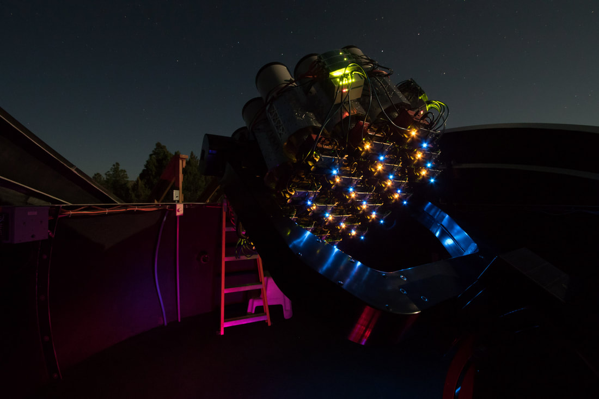
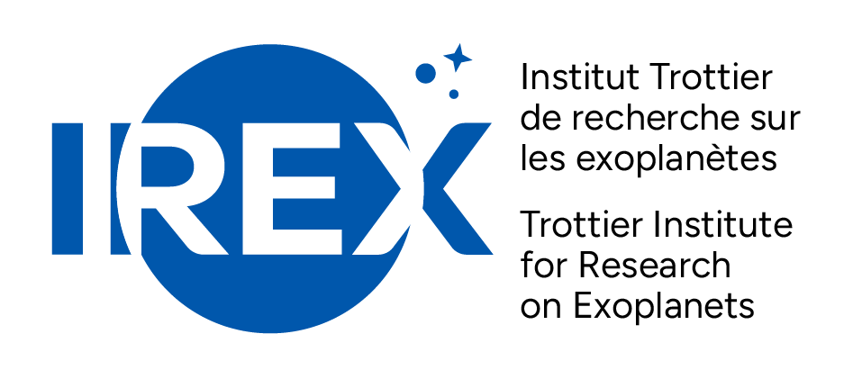
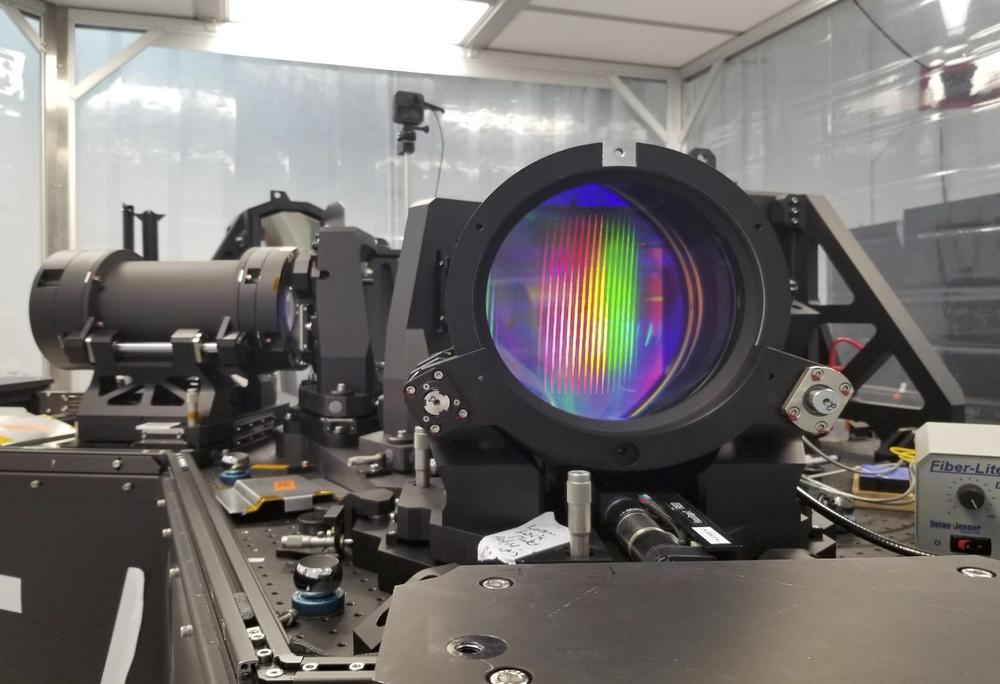
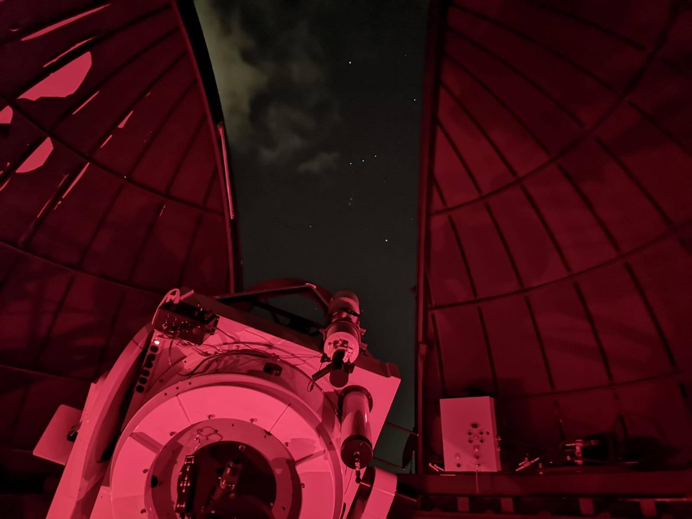

Research & Experience
Current Research

Image credit: Dragonfly Telephoto Array
Astronomy Research Assistant (Co-op)
Herzberg Astronomy & Astrophysics Research Centre / National Research Council Canada | September 2026 - Present
I am currently on a fall co-op to perform data processing of polarimetry observations from the Dragonfly Telephoto Array.
Previous Research & Work Experience

Image credit: iREx
Trottier Summer Research Intern
McGill University / iREx | May 2026 - August 2026
This research internship focused on studying exoplanet radial velocities. My responsibility was to begin updating a developing pipeline from synthetic to real observations. The pipeline uses machine learning to perform posterior sampling of stellar spectra to better constrain exoplanet radial velocities and mass estimates. I was working with SPIRou observations of Barnard's Star to develop and test the pipeline's methods on real data.
I presented my work at the TSI Summer Research Showcase at McGill, where I was awarded my session's Best Presenter Award, and at the iREx Summer Research Showcase. I also had the opportunity to attend CASCA 2026 and spend two nights at the Mont-Mégantic Observatory as part of this internship.

Image credit: Gemini Observatory
Astronomy Research Assistant
University of Victoria | May 2025 - August 2025
This position involved working with Gemini High-resolution Optical SpecTrograph (GHOST) spectral observations of Ultra Faint Dwarf Galaxies (UFDs). In particular, I was contributing to the GHOST Ultra-faint Legacy Survey (GHOULS) which is an ongoing survey of UFDs accessible from the Gemini South telescope. My work involved performing an analysis of the metallicities of stars observed within the GHOULS survey.

Image credit: University of Victoria Observatory
Open House Facilitator
University of Victoria's Observatory | September 2024 - August 2025
In this role, I provided guided tours of the University of Victoria's Observatory to the public, including school groups and community members. I provided night time observing at the weekly open house using both the 0.8m DFM telescope, and 0.2m Celestrons. I also maintained the observatory's social media accounts.
Image credit: ALMA Primer, Natalie Perelygin
Video Developer in Astronomical Concepts
Herzberg Astronomy & Astrophysics Research Centre / National Research Council Canada | May 2024 - August 2024
In this role, I co-produced four short (5-15 minute) educational videos tailored for astronomers new to radio astronomy and the Atacama Large Millimeter/submillimeter Array (ALMA) telescope for the ALMA Primer YouTube channel. The videos were created using Adobe Premiere Pro, Adobe Illustrator and Photoshop. I also co-narrated one of the videos. Scientific accuracy was a top priority of ours, and so our group collaborated with researchers through many rounds of feedback and editing before the videos were published. Across the 4 videos I contributed to, they received 1,000+ views.